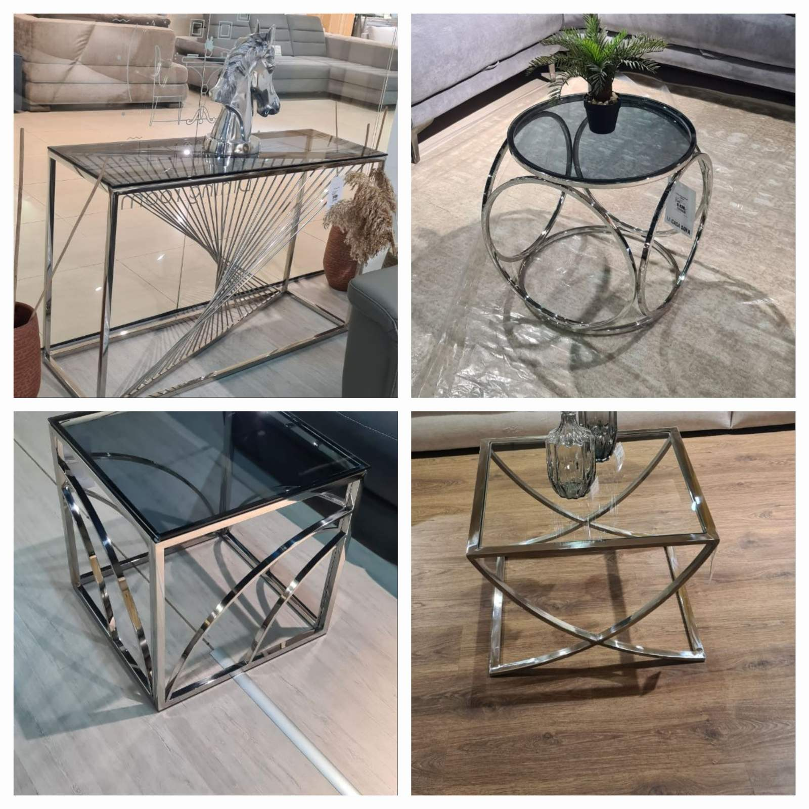
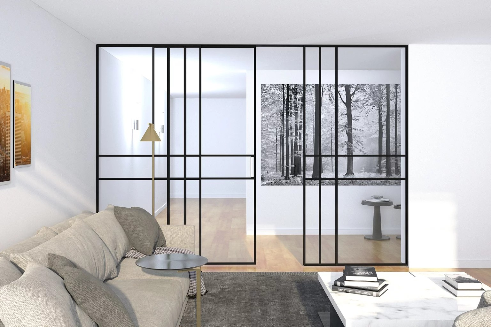
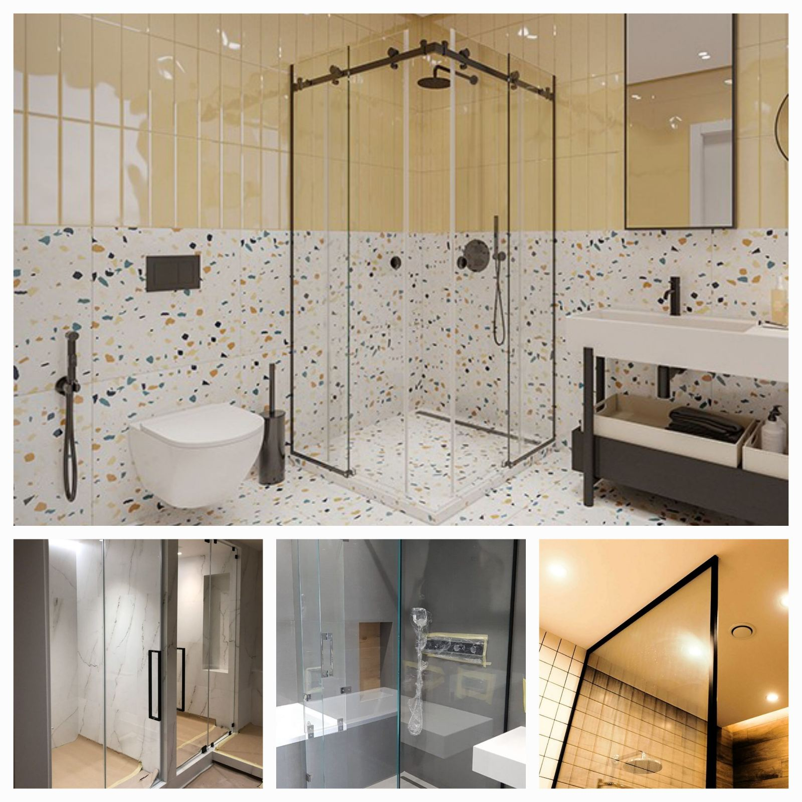

Український бренд «VauHos» — виробництво, що динамічно розвивається і
створює по-справжньому унікальні меблі, вироби із скла, дерева та
металу. Компанія спеціалізується на розробці та реалізації меблевих
рішень будь-якого масштабу та рівня складності. Портфоліо бренду
налічує десятки комплексних ідей, які успішно втілені як для
приватних, так і для великих корпоративних клієнтів.
☑ Ексклюзивну мебель

Ми представляємо Вам широкий асортимент якісних, а також
ексклюзивних виробів безпосередньо нашого виробництва і під
замовлення. Тепер купити необхідне додому можна всього за кілька
хвилин незалежно в якій точці України ви живете. Особливим
напрямком нашого виробництва є вироби з нержавійки та скла. Меблі
з нержавійки виглядають сучасно, візуально розширють простір,
надійни і довговічні. Такі меблі частіше можна зустріти в
колекціях сучасних меблів або виготовленої під замовлення. Меблі з
нержавіючої сталі виглядають свіжо, яскраво, роблять інтерєр більш
розкішним. В офісному просторі меблі з нержавійки виглядають
органічніше. Вони придумани саме для того, щоб зробити офіс більш
суворим і респектабельним. Столи, шафи, полиці, рецепція,
журнальні столики з нержавіючої сталі знайшли своє застосування в
офісному просторі. Меблі з нержавіючої сталі зазвичай робляться з
полірованої сталі. Це тому, що після зварювання зварювальні шви
зачищаються і поліруються. Щоб текстура полірованих місць
зварювання не відрізнялася від самої нержавійки, нержавіючу трубу
також беруть полірованою. Це зовсім не означає, що нержавіюча
сталь не може бути сатірованная або матова. Фахівці нашої компанії
будь-яких меблів з нержавіючої сталі можуть надати більш
граціозний і стильний вигляд з сатиноваї нержавейки. Компанія
«VauHos» пропонує дизайнерські розробки меблів з нержавіючої
сталі. Ми можемо втілити в життя ваші найсміливіші задуми. У нас
великий досвід виготовлення і експлуатації таких виробів. У нашому
Інтернет магазині можна придбати меблі з нержавіючої сталі в стилі
хай тек.
☑ Вироби з бронь-скла

Знайдено ідеальне рішення для відокремлення простору, здатне
охарактеризувати складні та елегантні інтер’єри. Суттєвий і
мінімальний, але в той же час виражений сильною ідентичністю
завдяки вертикальним та горизонтальним перегородкам, що найкраще
підходить для зон відпочинку, вітальні та спальної зон. Висота та
ширина здатна вписатися в будь-який доступний пройом та
пристосуватися до різних видів відкриття.
Скляні розсувні перегородки від "VauHos" це:
Скляні розсувні перегородки від "VauHos" це:
- -Індивідуальні рішення будь-якої складності
- -Власне виробництво та монтаж
- -Доступна ціна на ексклюзивні проекти
☑ Скляні душеві перегородки

Скляні душові перегородки – зручний та естетичний елемент сучасної
ванної кімнати. Скляні душові перегородки це практичне та стильне
рішення для невеликих приміщень та людей, які цінують свій час.
У компанії "VauHos" можна замовити скляні душові перегородки з прозорим, матовим, тонованим склом та з нанесенням декоративних елементів та малюнків лазерного гравіювання.
У нас ви можете замовити розсувні, розстібні, складні, кутові душові кабіни за індивідуальним дизайном та розмірами.
У компанії "VauHos" можна замовити скляні душові перегородки з прозорим, матовим, тонованим склом та з нанесенням декоративних елементів та малюнків лазерного гравіювання.
У нас ви можете замовити розсувні, розстібні, складні, кутові душові кабіни за індивідуальним дизайном та розмірами.